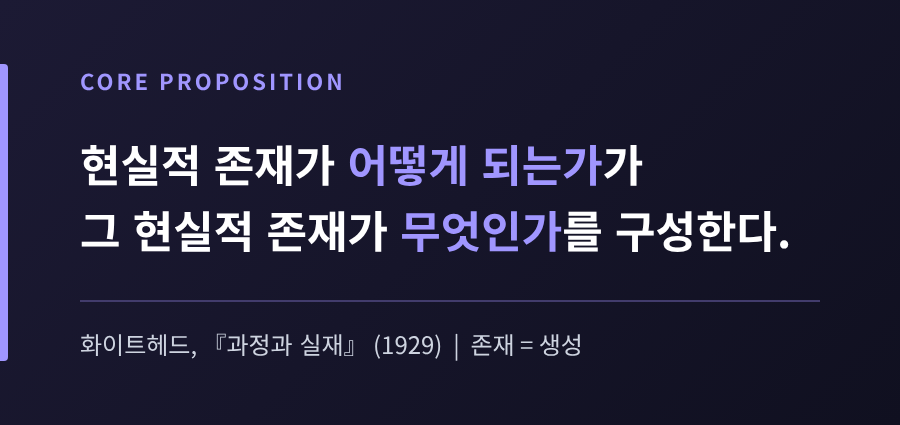
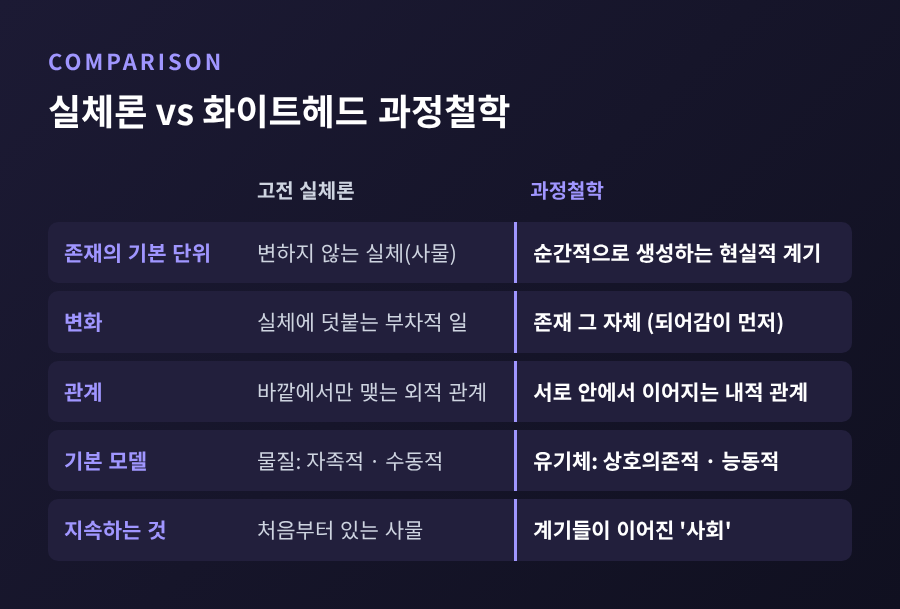
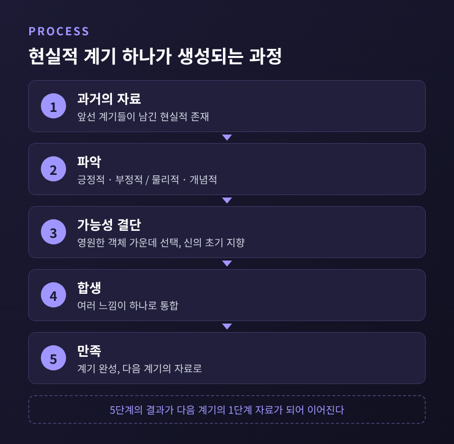
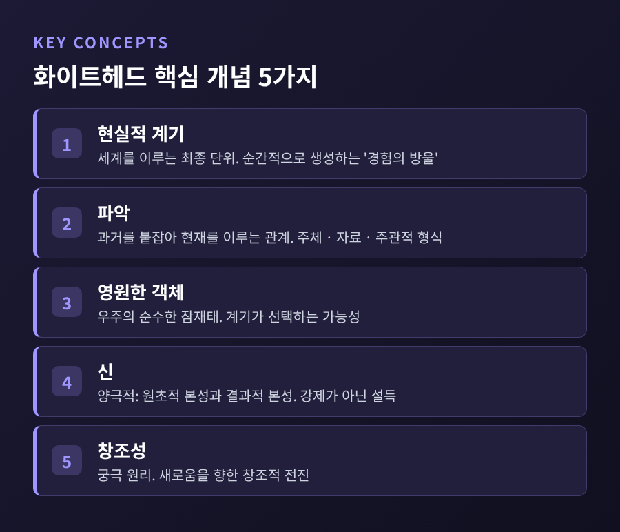
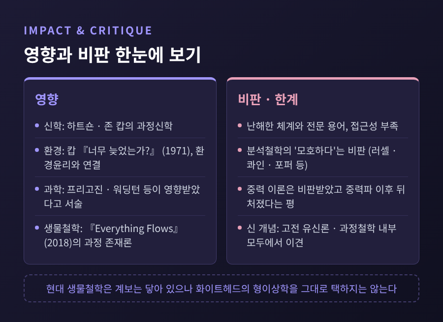

이번 글에서는 화이트헤드의 과정철학을 정리해 보겠습니다.
『과정과 실재』가 세계를 사물이 아닌 생성하는 사건으로 보는 이유와, 그 핵심 개념인 현실적 계기·파악·영원한 객체·신을 차례로 살펴봅니다.
마지막에는 현대 과학과 생물철학에 미친 영향, 그리고 따라 붙는 비판까지 함께 다룹니다.
세 줄 요약
1. 화이트헤드에게 세계의 최종 구성단위는 변하지 않는 실체가 아니라, 순간적으로 생겨나 사라지는 '현실적 계기'입니다.
2. 계기는 과거를 '파악'하고 가능성(영원한 객체) 가운데 하나를 결단하며 스스로를 이룹니다. 신은 그 결단을 강제하지 않고 설득합니다.
3. 이 관점은 신학과 생물철학에 영향을 주었지만, 난해함과 형이상학적 부담이라는 비판도 받아 왔습니다.
알프레드 노스 화이트헤드는 1861년에 태어나 1947년에 세상을 떠난 영국 출신 철학자입니다.
처음에는 수학자였습니다.
1903년 왕립학회 회원이 되었고, 러셀과 함께 『수학 원리』(1910~1913)를 썼습니다.
1924년에는 하버드 대학 철학 교수로 자리를 옮겼습니다.
『과정과 실재』는 1927~28년 에든버러 대학 기퍼드 강연을 바탕으로 1929년에 출간되었습니다.
부제는 '우주론 시론'입니다.
위키피디아는 이 책을 20세기의 가장 인상적인 형이상학 텍스트로 꼽을 만하다고 소개하면서, 동시에 거의 읽히지 않고 이해되지도 않았다고 덧붙입니다.
난해하다는 평은 일찍부터 있었습니다.
러셀은 이 책이 매우 모호해서 끝내 이해하지 못한 부분이 많았다고 적었습니다.
첫 강연의 청중이 크게 줄었다는 일화도 전합니다. 다만 얼마나 줄었는지는 소스마다 다릅니다.
한계를 먼저 밝혀 두자면, 이 글도 그 난해한 체계를 입문 수준에서 옮긴 것일 뿐입니다.

서양 철학의 오랜 기본값은 실체(substance)였습니다.
스탠퍼드 철학 백과사전은 실체 형이상학의 뿌리를 파르메니데스의 직관, 곧 존재는 단순하고 변하지 않는다는 생각에서 찾습니다.
이 틀에서 사물은 매 순간 같은 모습으로 있는 것이고, 변화는 그 위에 얹히는 부차적인 일입니다.
화이트헤드는 『과정과 실재』에서 유럽 철학 전통을 '플라톤에 대한 일련의 각주'라고 표현하기도 했습니다.
화이트헤드는 이 그림을 뒤집습니다.
예전에는 사물이 먼저 있고 그 사물이 변한다고 보았습니다. 이제는 되어가는 과정이 먼저이고, 사물처럼 보이는 것은 그 과정이 엮여 안정된 모습이라고 봅니다.
그가 겨냥한 것은 두 가지입니다.
하나는 뉴턴식 '단순 정위'입니다. 자족적인 물질 조각이 어느 한 지점에 홀로 놓여 있다는 생각입니다. 화이트헤드는 전자기 이론이 이 그림을 상호 연관된 과정과 활동으로 대체한다고 보았습니다.
다른 하나는 '구체성을 잘못 놓은 오류'입니다. 추상을 구체로 착각하는 오류를 가리킵니다.
그는 자연을 수학적인 제1성질과 색·소리 같은 제2성질로 쪼개는 '자연의 이분화'도 받아들이지 않았습니다. "철학은 추상에 대한 비평가"라는 그의 말은 이 태도를 잘 보여 줍니다.

IEP는 이 대비를 물질과 유기체의 차이로 정리합니다.
물질은 자족적이고 수동적이며 서로 바깥에서만 관계 맺습니다.
유기체는 서로에게 기대고, 안에서부터 관계 맺으며, 능동적입니다.
화이트헤드는 세계를 후자의 모델로 읽습니다. 그래서 그의 체계에는 '유기체의 철학'이라는 이름이 붙습니다.
그렇다면 사물이 아닌 무엇이 세계를 이룰까요.
화이트헤드의 답은 현실적 존재, 흔히 현실적 계기(actual occasion)로 옮기는 단위입니다.
번역어는 '현실적 존재'와 '현실적 계기'가 함께 쓰이므로 책에 따라 용어가 다를 수 있습니다.
그는 이것을 "세계가 이루어지는 최종적인 실재물"이라 부르고, 다른 대목에서는 "경험의 방울들(drops of experience)"이라고도 표현합니다.
여기서 경험이 곧 인간의 의식을 뜻하지는 않습니다.
전자에서 사람에 이르기까지 정도의 차이일 뿐 종류의 차이는 아니라는 것이 IEP의 설명입니다.
이 단위에서 가장 중요한 문장은 이것입니다.
"현실적 존재가 어떻게 되는가가, 그 현실적 존재가 무엇인가를 구성한다."
존재와 생성이 따로 놀지 않는다는 선언입니다.
그러면 바위나 사람처럼 오래 지속되는 것은 무엇일까요.
화이트헤드에게 그것은 계기들이 시간 속에서 줄지어 이어진 '사회(society)'입니다.
생성은 원자적이라서, 그는 "연속성의 생성은 있으나 생성의 연속성은 없다"고 말합니다.
강물처럼 이어져 보이는 흐름도 사실은 작은 생성의 마디들이 이어진 결과라는 뜻입니다.
각 계기는 어느 정도 자기결정적이기도 합니다.
SEP가 인용하는 표현으로는 "현실성은 가능성 한가운데서의 결단"입니다.
과거가 주어지되, 그것을 어떻게 통합할지는 계기가 정합니다.
계기는 어떻게 과거와 이어질까요.
화이트헤드가 이 연결을 부르는 이름이 파악입니다.
라틴어 prehensio, 곧 '붙잡다'에서 따온 말입니다. 의식적일 수도, 무의식적일 수도 있어서 전자와 사람에게 모두 쓸 수 있습니다.
파악에는 세 요소가 있습니다.
파악하는 주체, 파악되는 자료(datum), 그리고 어떻게 파악하는지를 나타내는 주관적 형식입니다(『과정과 실재』 23~24쪽).
자료를 주체 안으로 받아들이면 긍정적 파악, 곧 '느낌'입니다.
자료를 느낌에서 제외해 합생 과정에서 작동하지 않게 하면 부정적 파악입니다.
문창옥의 논문 초록은 부정적 파악을 양립할 수 없는 여건을 배제하는 작용으로 요약합니다.
자료가 현실적 존재이면 물리적 파악, 영원한 객체이면 개념적 파악입니다.
어느 쪽이든 의식이 반드시 필요하지는 않습니다.
여러 파악이 하나로 모여 새 계기가 완성되는 과정을 합생(concrescence)이라 합니다.
"여럿이 하나가 되고, 하나만큼 증가된다."
이 한 줄이 합생을 가장 간결하게 요약합니다.
완성된 계기는 사라지지만, 다음 계기가 그것을 다시 자료로 파악합니다.
이렇게 각 계기는 과거의 모든 계기와 내적으로 이어지되, 영향의 크기만 다릅니다. 이것이 IEP가 설명하는 상대성 원리입니다.

일상의 감각으로 옮기면 이렇습니다.
지금 이 문장을 읽는 순간은 방금 전의 순간들을 품고 있습니다.
기억은 먼 과거를, 지각은 가까운 과거를 붙잡는 일이라고 풀이하는 해석도 있습니다. 다만 이는 위키피디아가 소개하는 한 연구자의 해석이므로 참고로만 보시길 권합니다.
계기가 결단하려면 선택지가 있어야 합니다.
그 선택지가 영원한 객체(eternal objects)입니다.
화이트헤드는 이를 "우주의 순수한 잠재태"라고 불렀습니다.
IEP는 '특정한 초록 색조'처럼 단순한 것부터 '채소'처럼 복잡한 것까지 층위가 있다고 설명합니다.
가능성이 실제 세계에 영향을 주려면 가능성을 한데 두고 계기에 건네는 무언가가 필요합니다.
화이트헤드는 여기에 신을 둡니다.
SEP와 IEP가 공통으로 전하는 신은 '양극적(dipolar)'입니다.
"신은 새로움의 기관"이라는 말과 "이해해 주는 동료 고난자"라는 표현이 이 신을 압축합니다.
이 신의 힘은 강제가 아니라 설득이며, 피조물의 자기결정을 뒤엎지 못합니다.
그래서 전능하지 않습니다.
IEP는 이를 악의 문제에 대한 과정철학의 응답으로 소개하고, 입장 분류는 고전 유신론도 범신론도 아닌 만유재신론이라 설명합니다.

신 개념에 대한 평가는 갈립니다.
도널드 셔번은 「신 없는 화이트헤드」(1971)에서 신이 체계에 불필요하다고 주장했습니다.
하트숀은 영원한 객체에 대한 이 설명을 비판하며, 신조차 인간의 창조성이 낳을 결과를 미리 알 수 없다고 보았습니다.
고전 유신론의 관점에서 강의한 아서 홈즈는, 이 신이 무로부터 창조하지 않고 기적적 개입도 하지 않는다는 점을 문제 삼습니다.
이 글에서는 학술적 논쟁이 있다는 사실만 짚어 두겠습니다.
화이트헤드는 과학의 언어로 철학을 시작한 사람입니다.
그래서 과학자들도 그의 생각을 빌렸습니다.
위키피디아는 일리야 프리고진, 콘래드 워딩턴, 찰스 버치, 시월 라이트가 영향을 받았고, 헨리 스탭과 데이비드 봄이 물리학에서 과정 형이상학에 기댔다고 적습니다.
SEP는 장(field) 개념과 "상호작용이 곧 규정"이라는 원리가 양자물리학에서 과정 형이상학을 뒷받침한다는 해석을 소개합니다.
이들이 어느 정도로 화이트헤드를 따랐는지는 소스에서 확인되지 않아, 영향 관계의 강도는 단정하기 어렵습니다.
생물철학 쪽 논의는 더 구체적입니다.
2018년 옥스퍼드 대학 출판부에서 나온 『모든 것은 흐른다』(대니얼 니콜슨·존 뒤프레 편)가 대표적입니다.
이 책은 살아 있는 세계가 실체적 입자나 사물이 아니라 과정으로 이루어져 있다고 주장합니다.
생물학이 설명할 핵심은 변화가 아니라 "끊임없는 변화를 통해 이루어지는 안정성"이라고 봅니다.
그 근거로 세 가지를 듭니다.
첫째, 물질대사의 회전입니다. 몸을 이루는 물질이 끊임없이 바뀌어도 생명체는 유지됩니다.
둘째, 생애 주기입니다.
셋째, 생태적 상호의존입니다.
흥미로운 대목이 있습니다.
OAPEN의 책 소개는 이전의 과정적 생물학이 대체로 화이트헤드의 범심론적 형이상학에 기댔다고 밝히고, 이 책은 자연주의적 형이상학을 택한다고 선을 긋습니다.
계보는 닿아 있어도, 화이트헤드의 체계를 그대로 가져오지는 않는다는 뜻입니다.
저는 이 지점이 그의 철학이 현재 놓인 자리를 잘 보여 준다고 생각합니다.
신학과 환경 쪽에서는 하트숀과 존 캅을 거쳐 과정신학이 자리 잡았고, 캅의 『너무 늦었는가?』(1971)는 과정철학과 환경윤리를 처음 연결한 책으로 소개됩니다.

과정철학이 환영만 받은 것은 아닙니다.
SEP는 체계에 접근하기 어렵고, 전문 용어가 더 넓은 철학 담론과 단절되어 있다고 지적합니다.
분석철학자들은 전후에 사변적인 과정 주장을 거부했고, 그 범주들도 함께 버려지는 일이 잦았습니다.
2016년 맥헨리와 실즈의 논문은 흥미로운 반전을 짚습니다.
분석철학자들이 화이트헤드의 형이상학을 모호하다고 비판해 왔지만, 그중 일부는 1920년대에 화이트헤드가 내놓은 입장과 비슷한 견해를 채택했다는 것입니다.
논문은 러셀, 콰인, 포퍼의 비판을 평가합니다. 다만 구체적인 논증은 전문을 확인하지 못했습니다.
물리학에서도 한계가 있습니다.
그의 중력 이론은 심하게 비판받았고, 중력파 관측 이후 시대에 뒤처졌다는 평가가 있습니다.
화이트헤드가 의도와 목적으로 우주를 설명한다는 점은 과학적 유물론과 부딪힌다는 지적도 있습니다.
SEP는 과정철학 전체에 남은 과제도 열거합니다.
역동성을 어떻게 정의할지, 과정과 시공간의 관계는 무엇인지, 과정을 어떻게 결합해 설명할지, 일상 경험에 어떻게 뿌리내릴지가 그것입니다.
개스킬과 노첵은 화이트헤드가 대륙철학자에게는 너무 과학적이고, 분석철학자에게는 충분히 과학적이지 않으며, 양쪽 모두에게 너무 형이상학적이라고 평합니다.
정리하면 이렇습니다.
화이트헤드가 던진 질문은 세계를 사물의 목록이 아니라 사건의 이어짐으로 읽으면 무엇이 달라지는가였습니다.
그의 용어는 낯설고 체계는 무겁습니다.
그럼에도 생물학이 '끊임없는 변화 속의 안정성'을 말할 때, 그의 문제의식은 이름을 바꾸어 되살아납니다.
결국 남는 것은 하나입니다.
"어떻게 되어 가는가가 곧 무엇인가를 이룬다."
내가 지금 붙잡고 있는 것은 고정된 무엇일까요, 아니면 방금 전을 품고 흘러가는 한 마디일까요. 이 질문에 쉽게 답하기는 어렵지만, 한 번쯤 물어볼 만하다고 생각합니다.
참고한 소스: Stanford Encyclopedia of Philosophy(Whitehead, Process Philosophy), Internet Encyclopedia of Philosophy(Process Philosophy), Wikipedia(Process and Reality, Alfred North Whitehead, Prehension, Process philosophy), Philosophy Now 86, Nicholson & Dupré 『Everything Flows』(OUP 2018), McHenry & Shields(JAPA 2016), 프레시안(2013), 문창옥(가톨릭철학 21호, 2013), Holmes 강의.